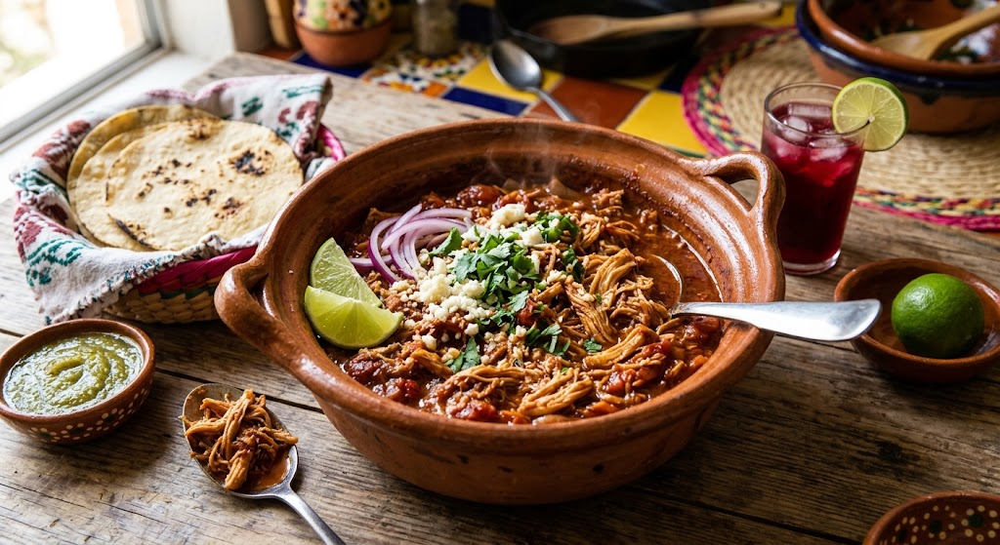

Tinga de Pollo

La lasagna de odin
La tinga de pollo forma parte de las preparaciones
mas populares dentro de la cocina mexicana gracias
a su sabor ligeramente picante, textura jugosa y
practicidad al momento de servir.
Este platillo tradicional suele disfrutarse en
reuniones familiares, comidas de fin de semana o
celebraciones patrias en Mexico, especialmente
acompañado de tostadas crujientes.
Ingredientes
- 2 Cubos de Concentrado de Tomate con Pollo
- 1 Chile chipotle
- 1 Taza de pure de tomate
- 1/4 De taza de agua
- 3 Jitomates
- 2 Cucharadas de aceite de vegetal
- 1/4 De pieza de cebolla
- 1 Pechuga de pollo
- Tostadas de maiz
- 2 Tazas de lechuga
- 1 Envase de media crema
- 100 Gramos de queso panela
Sigue los pasos de odin
- El Concentrado de Tomate con Pollo, el chile chipotle,
el pure de tomate, el agua y los jitomates se integran
en la licuadora hasta obtener una mezcla homogenea
con textura ligera y sabor ligeramente picante.
- .La cebolla fileteada se cocina en aceite vegetal
hasta adquirir un tono mas transparente y suave.
Posteriormente, la salsa de jitomate se incorpora
junto con la pechuga de pollo deshebrada para
formar la base de la tinga de pollo.
- Durante la coccion, la mezcla desarrolla una
consistencia mas espesa y un sabor concentrado
caracteristico de las preparaciones mexicanas
tradicionales. El pollo absorbe el sabor del
chipotle y del jitomate mientras la salsa
reduce ligeramente.
- La preparacion suele servirse sobre tostadas
de maiz y complementarse con lechuga, media
crema y queso panela rallado para lograr una
combinacion equilibrada entre textura
crujiente y cremosa.
Home